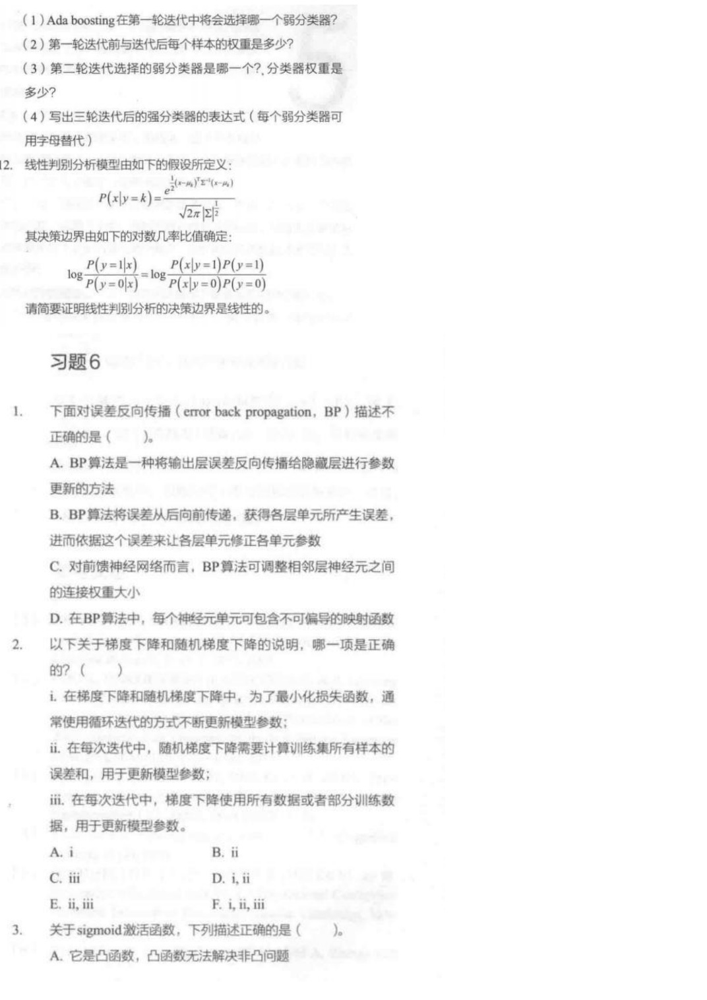
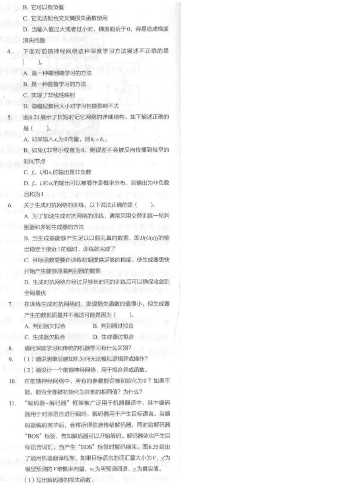

题 1：BP 描述不正确的是哪一项？
下面对误差反向传播 error back propagation, BP 描述不正确的是？
看答案和解析
答案：D。
题眼：BP 依赖链式法则计算梯度。要反向传播误差，就必须能对每一层的映射函数求导或至少有可用的梯度近似。
A/B/C 为什么对：它们都在说同一件事：输出层误差从后往前传，算出各层参数对损失的影响，然后更新权重。
考试句式：BP 的基础是梯度和链式法则，因此网络中的激活函数通常需要可导或分段可导；不可偏导映射会阻碍梯度计算。
对应《人工智能参考习题》扫描页第 6-8 页。这里的目标不是把深度学习学成研究生课，而是让你在期末题里能识别 BP、梯度下降、sigmoid、前馈网络、LSTM、GAN、XOR 和编码器-解码器的题眼，并能写出标准解释。
神经网络题很容易看起来像一堆英文缩写。其实期末常考的不是复杂推导，而是“这个方法解决什么问题、为什么这个选项错、公式里的量代表什么”。
| 词 | 从零解释 | 考试题眼 |
|---|---|---|
| 前向传播 | 输入从第一层一路算到输出，得到预测值。 | input -> hidden -> output，预测。 |
| 损失函数 | 衡量预测和真实答案差多少。训练就是想让损失变小。 | loss、error、cross entropy、MSE。 |
| 反向传播 BP | 把输出层误差沿网络反向传回去，计算各参数该怎么改。 | 误差反传、链式法则、可微、更新权重。 |
| 梯度下降 | 沿着让损失下降最快的方向一点点更新参数。 | 迭代、学习率、全量/随机/小批量。 |
| sigmoid | 把数压到 0 到 1 之间。输入特别大或特别小时，梯度接近 0。 | 饱和、梯度消失、二分类概率。 |
| 前馈神经网络 | 信息只向前流动，没有循环连接。多层和激活函数让它能表示非线性映射。 | 端到端、非线性、隐藏层。 |
| LSTM | 一种改进 RNN 的网络，用门控结构保留或忘记信息，缓解长序列梯度消失。 | 遗忘门、输入门、输出门、长期依赖。 |
| GAN | 生成器造数据，判别器判断真假，两者对抗训练。 | generator、discriminator、交替训练、模式崩塌。 |
这页的参考习题看起来很散：BP、sigmoid、LSTM、GAN、XOR、编码器-解码器都挤在一起。其实它们都在回答同一件事：机器怎样用一堆可调参数，学出一个能处理复杂输入的函数。
关键词是 BP 和链式法则。BP 要从损失函数一路向前面的参数传梯度，若中间映射不可导，就无法正常计算梯度，参数也不知道该怎么更新。所以这类说法通常是错的。
想到 对称性没有被打破。同一层神经元参数一样，前向输出一样，反向梯度也一样，后面仍会一起更新成一样，多个神经元等于重复劳动，网络容量被浪费。
下面对误差反向传播 error back propagation, BP 描述不正确的是？
答案：D。
题眼：BP 依赖链式法则计算梯度。要反向传播误差，就必须能对每一层的映射函数求导或至少有可用的梯度近似。
A/B/C 为什么对：它们都在说同一件事：输出层误差从后往前传，算出各层参数对损失的影响，然后更新权重。
考试句式：BP 的基础是梯度和链式法则，因此网络中的激活函数通常需要可导或分段可导；不可偏导映射会阻碍梯度计算。
以下关于梯度下降和随机梯度下降的说法，哪一项正确？
参考答案：A。
i 正确：梯度下降类方法都是反复迭代更新参数，让损失逐步降低。
ii 错误：随机梯度下降 SGD 每次通常只用一个样本或小批量样本估计梯度，不需要每次计算全体样本误差和。每次都算全体样本更接近批量梯度下降。
iii 为什么不作为本题正确项：若把“梯度下降”广义理解为批量/小批量/随机一族，iii 有一定合理性；但这道题在区分梯度下降和随机梯度下降，按常规教材口径，普通梯度下降使用全量数据，随机梯度下降使用随机样本或小批量。因此本题最稳选 i。
关于 sigmoid 激活函数，下列描述正确的是？
答案：D。
从零理解：sigmoid 会把任意实数压到 0 和 1 之间。输入很大时输出接近 1，输入很小时输出接近 0，这两头曲线很平，导数接近 0。
为什么这会出问题：梯度接近 0，参数几乎不更新。网络层数一深，前面的层更难学到东西，这就是梯度消失。
为什么 B 错：sigmoid 输出在 (0,1)，不会是负数。
下面对前馈神经网络这种深度学习方法描述不正确的是？
答案：D。
题眼：前馈神经网络的表达能力和隐藏层结构密切相关。隐藏层数、每层神经元数、激活函数都会影响模型能表示什么函数、是否容易训练、是否过拟合。
A 为什么通常对：端到端表示从输入直接学到输出，不需要人为拆很多中间规则。
B 的口径：前馈网络常用于有标签的分类/回归，所以在本课程题目语境里通常按监督学习理解。
C 为什么对：如果只有线性层叠加，整体仍是线性；加入非线性激活后，网络才能表示复杂非线性关系。
图 6.21 展示了 LSTM 的结构。下列描述正确的是？
参考答案：B。
题眼：LSTM 用遗忘门控制上一时刻信息保留多少。若遗忘门接近 0，上一时刻信息和梯度通道会被压掉，误差很难继续传到更早时间点。
C 的说明：门控通常由 sigmoid 输出，元素在 0 到 1 之间，所以“非负”这句话本身也成立。但单选题更可能考“遗忘门如何影响梯度传播”，因此 B 是更贴近题意的标准答案。
D 为什么错：门控向量不是 softmax 概率分布。每个元素可在 0 到 1 之间独立开关，不要求所有元素加起来等于 1。
关于生成对抗网络 GAN 的训练，以下说法正确的是？
参考答案：C。
题眼：GAN 训练容易不稳定。若判别器太强，生成器可能拿不到有效梯度，所以目标函数和训练技巧要让生成器在早期也能收到有用学习信号。
A 为什么不稳：GAN 常交替训练生成器和判别器，但具体是一轮还是多轮没有固定“通常必须”的答案，不是最稳说法。
B 为什么不严谨：D(G(z)) 接近 1 只说明判别器被生成器骗过，不能单独说明整体训练稳定完成。GAN 还可能模式崩塌。
D 为什么错：GAN 的优化是非凸对抗优化，不能保证训练足够久就收敛到全局最优。
训练 GAN 时，发现损失函数的值很小，但生成器产生的数据质量并不高，这可能是因为？
参考答案：B。
从零解释：判别器如果过拟合训练数据，可能在训练集上表现很好、损失看起来很小，但它给生成器的反馈不再代表真实数据分布。生成器就可能学到偏的方向，生成质量仍然差。
考试句式：GAN 中判别器和生成器需要保持相对平衡。判别器过强或过拟合会导致生成器梯度不稳定或缺乏有效指导，出现损失值与生成质量不一致。
参考答案：传统机器学习通常更依赖人工设计特征，再把特征交给分类器或回归模型；深度学习通过多层神经网络从原始数据或低级特征中逐层学习表示，能自动学习更抽象的特征。
补一句更完整：深度学习通常需要更多数据和计算资源，模型可解释性较弱，但在图像、语音、自然语言等复杂感知任务中表现突出。
XOR 异或：两个输入不同输出 1，相同输出 0。
为什么单层感知机不行：单层感知机只能表示线性分类边界。XOR 的正负样本在二维平面上不是线性可分的，无法用一条直线分开。
一个两层网络模板：用两个隐藏神经元先做 OR 和 AND，再用输出层做 “OR 且不是 AND”。
考试句式：加入隐藏层和非线性激活函数后，前馈神经网络可以组合多个线性边界，从而表示 XOR 这类非线性可分函数。
在前馈神经网络中，所有参数能否初始化为 0？如果不能，能否全部初始化为其他相同值？为什么？
答案：一般不能全部初始化为 0，也不能全部初始化为相同值。
原因：如果同一层神经元初始参数完全相同，它们前向输出相同，反向传播得到的梯度也相同，后续更新仍然相同。这样多个神经元会一直学成同一个东西，网络等于浪费了容量。
关键词：对称性破缺。随机小值初始化的目的就是打破神经元之间的对称性，让它们学习不同特征。
第 7-8 页出现机器翻译的编码器-解码器框架。你可以把它想成两段：编码器读源语言，把信息压成上下文表示；解码器一步步生成目标语言词。
机器翻译中，解码器每一步输出目标语言词的概率分布。若目标词表大小为 V，y 为真实 one-hot 向量，预测为 p，请写出解码器常用损失函数，并说明怎样更新词向量。
损失函数：序列生成通常把每个时间步的交叉熵加起来：
从零解释：每一步解码器都在做一个“从词表里选下一个词”的多分类问题。真实词的预测概率越高，损失越小。
梯度骨架：若 softmax 输入 logits 为 z，交叉熵对 logits 的梯度是：
考试若不要求完整推导，写出交叉熵和“预测概率 - 真实 one-hot”这个核心梯度就很稳。
参考习题给出 RNN 反向传播中会出现很多小于 1 的导数连乘，导致梯度趋近 0。请用人话解释 LSTM 为什么能缓解这个问题。
普通 RNN 的问题：长序列反向传播时，梯度要跨很多时间步传回去。每跨一步都会乘上一些导数项，如果这些项大多小于 1，连乘很多次后就接近 0，前面时间步几乎收不到学习信号。
LSTM 的做法：LSTM 引入细胞状态和门控机制。遗忘门决定保留多少旧信息，输入门决定写入多少新信息，输出门决定输出多少状态。
关键句：当遗忘门接近 1 时，细胞状态可以较稳定地沿时间传递，梯度也能沿这条通道传得更远；当遗忘门接近 0 时，模型主动忘记无用历史。门控结构让模型能选择性保留长期信息，从而缓解梯度消失。
考试写法：LSTM 不是魔法消灭所有梯度问题，而是通过加性细胞状态和门控通道减少长时间连乘小导数带来的梯度衰减。
平时先看上面的题卡。只有当你要核对原题图、选项或公式时，再展开扫描页。

